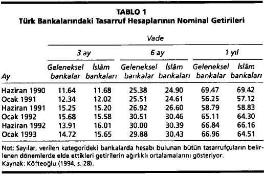

İSLAM EKONOMİSİ VE İSLAMİ ALT-EKONOMİ{*}
Yirminci yüzyılın ortalarında İslâm ekonomisi olarak adlandırılan bir yazın ortaya çıktı. Bu yazının amacının Kur'an'a ve İslâmi geleneklere uygun bir ekonomik düzen sunmak ve yerleştirmek olduğu belirtildi. Onlarca dilde binlerce kitap, makale ve broşür çıkarmış olan bu yazın,1 İslâmi esaslara göre düzenlenmiş bir ekonominin kapitalizmle sosyalizmin kusurlarından muaf olmanın yanında, bu iki sistemin güçlü yönlerini kendinde birleştirdiğini iddia etmektedir.
İslâm ekonomisi uzun yıllar boyunca yalnızca düşünsel bir alıştırma olarak kaldı. Ancak, 1970'li yıllardan başlayarak İslâm ekonomisinin ideallerini uygulamaya geçirmek için ciddi adımlar atılmıştır. Günümüzde onlarca ülkede geleneksel bankacılığa alternatif olarak faizsiz işlem yaptıklarını, dolayısıyla ahlâki yönden görece üstün olduklarını iddia eden İslâm bankaları bulunmaktadır. Bunların birçoğu kârlı olduğunu kanıtlamış olup, kimileri de hızla büyümektedir.Aralarında Pakistan'ın da bulunduğu birkaç ülke, her tür faizi yasaklayacak kadar ileri gitmiş, yabancı bankalar da dahil olmak üzere bankaların tümünü mevduat ve kredi işlemlerini görünüşte İslâmi bir çerçeveye oturtmaya zorlamışlardır.Pakistan, Suudi Arabistan, Malezya ve başka birkaç ülke, çok eskilere giden bir dini vergiyi yeniden toplamak ve elde edilen gelirin dini kurullarca uygun bulunan amaçlara harcanmasını sağlamak için resmi bir dağıtım sistemi kurmuştur. Dahası, birçok ülkede kendilerine İslâmi bir kimlik vermiş olan perakende satış merkezleri, yayınevleri, yatırım şirketleri, fabrikalar, inşaat şirketleri ve hatta holdingler kurulmuştur. Özellikle İslâm dünyasının hızla gelişen metropollerinde İslâm bankaları ve yeniden dağılım sistemleriyle birlikte bu şirketler canlı alt-ekonomiler oluşturuyor.
Bu makale işte bu gelişmeleri incelemeyi amaçlıyor. İslâm ekonomik düşünü, lâik ekonomik geleneklerden nasıl ayrılır? Tutarlı ve kapsamlı bir bilimsel düşün oluşturduğu söylenebilir mi? Uygulamada getirdiği yenilikler nelerdir? Kurulu İslâm bankaları, kuruluş bildirilerinde kutsal olarak nitelenen mali ilkelere ne ölçüde uymaktadır? İslâmi ekonomik etkinliklere hangi toplumsal gruplar katılıyor ve amaçları nedir? Son olarak, İslâm adına gerçekleştirilen ekonomik etkinliklerin topluma yararı ve zararı ne olmuştur?
İslâm ekonomisinin ayırt edici özellikleri
İslâm ekonomisinin ortaya çıkış nedeni, ekonomik dengesizlikleri, adaletsizlikleri ya da eşitsizlikleri gidermek değildir. 1940'lı yıllarda İslâm ekonomisi kavramını ortaya atan Hintli Müslümanların amacı, İslâm uygarlığını yabancı kültürel etkilere karşı savunmaktı. Birçok kitabıyla "İslâm ekonomisi" terimini yaygınlaştırmış ve bu yazının gelişmesini sağlayan ortamı hazırlamış olan Pakistanlı düşünür Seyyid Ebu'l-A'la Mevdudi'ye göre, İslâm ekonomisinin ortaya koyduğu yeni yaklaşım , Müslümanların Batı kökenli fikir akımlarının etkisine girmekte olduğu bir dönemde İslâm'a yeniden itibar kazandıracaktı. Batı'da geliştirilmiş ekonomik yaklaşımların İslâmi bir yaklaşımla değiştirilmesiyle, Müslüman toplumların kendilerine olan saygısı geri gelecek ve birbirileriyle dayanışmaları gelişecekti.2
İslâm ekonomisi kültürel ve politik amaçlarla geliştirildiği için tutarlılık, kesinlik ya da gerçekçilik gibi bilimsel standartlara uyması gerekmiyordu. Yerini alması tasarlanan düşünsel geleneklerle ayrıldığı noktaları göstermesi yeterliydi.Dolayısıyla İslâm ekonomisi üzerine yazılan ilk yazılar İslâm ekonomisinin ayırt edici özellikleri üzerinde durdular. Mevdudi'den günümüze İslâm ekonomisinin en temel özelliği faiz yasağı olmuştur. Öteki iki önemli özelliği ise, çok eskilere dayanan bir dağılım sistemi olan zekât ve ekonomik kararların İslâmi bir ahlâki süzgeçten geçirilme zorunluluğudur.
Faiz yasağı
Faiz karşıtlığının dayanağı, Kur'an'ın, oranına ve biçimine bakılmaksızın her tür faizi yasakladığı inancıdır. Aslında Kur'an, İslâm dinine geçmeden önce Arapların kullandığı, zamanında ödenmemesi durumunda borcun, sermaye ve biriken faizle birlikte, ikiye katlanmasına dayanan bir uygulama olan riba'yı yasaklar. Borçluları köleliğe iten bir uygulama olan riba, ciddi toplumsal çatışmalara neden oluyordu. Buna bağlı olarak, İslâm'ın ortaya çıkışından bu yana Kur'an'ın birçok yorumcusu, riba'nın yasaklanma amacının toplumsal açıdan zararlı mali uygulamaların engellenmesi olduğunu belirtmiş, bu yasağın modern devletlerdeki iflas yasalarında olduğu gibi alacaklıların, borçlarını zamanında ödeyemeyen borçlulara hoşgörülü davranmasını sağladığına işaret etmiştir.3
Ne var ki son elli yılda, faize karşı çıkmak, "İslâm iktisatçısı" addedilmenin olmazsa olmaz koşulu olmuştur. İslâm iktisatçısı olarak kabul görmek için ekonomi tartışmalarına katılan bilgili bir Müslüman olmak yetmez, ilke olarak her tür faize, mali sistemleri geri kalmış ülkelerdeki tefecilerin tekelci kazançlarının yanında, endüstrileşmiş ülkelerdeki ticari bankaların rekabetçi bir ortamda elde edilmiş kazançlarına da karşı çıkmak gerekir. Dolayısıyla İslâm ekonomisi, faiz oranlarının nasıl sınırlanacağı ya da mali pazarlarda rekabetin nasıl teşvik edileceğini araştırmamakta, faizin nasıl yok edileceği üzerinde durmaktadır.
Geçmişte ya da günümüzde işlemlerinden faizi bütünüyle kaldıran hiçbir ülke olmamıştır. Özellikle ekonomik açıdan ilkel topluluklarda her zaman faize karşı çıkan gruplar olmuşsa da, hiçbir büyük toplulukta faiz mali işlemlerden kaldırılamamıştır.4 İşte bu nedenle İslâm iktisatçıları söz konusu yasağa Kur'an'da geçmesi dışında gerekçeler bulmak için büyük çaba sarf ediyorlar. İslâm ekonomisi üzerine yazılmış bütün popüler metinlerde sunulan bir sav,5 risk almadan para kazanmanın haksız olduğu yönündedir. Bu savın mantığına göre, bir bankanın sanayi kredisi üzerinden faiz alması haksızlığa yol açacaktır, çünkü finanse edilen yatırımın riski, tamamen sanayicinin üzerinde olacak, yatırım batsa bile banka kazanç elde edecektir. Benzer biçimde, bir tasarrufçunun tasarrufu üzerinden faiz alması haksızlık yaratacaktır; çünkü onun tasarruflarıyla finanse edilen yatırımların batması durumunda banka zarar ederken o, önceden belirlenen miktarda kazanç elde edecektir.Risksiz kazanç elde etmenin yararları bir yana, sözü edilen savın püf noktası, kazancın, riske girme karşılığında verilen bir ödül olduğu sürece meşru olmasıdır. Dolayısıyla bankacılık hem riskin hem de kârın paylaşılmasına dayanacak, faiz ortadan kaldırılacaktır. Bireylerin paralarını güvenlik amacıyla bankaya yatırmalarında sakınca olmamakla birlikte, faiz almaları kesinlikle önlenecektir.
İslâm bankacılığı yazını, tasarrufçuyla bankanın ya da bankayla kredi kullanıcının riski nasıl paylaşacaklarını belirtmez. Yalnızca, mali sözleşmeye taraf olanların riski paylaşmaları gerektiği üzerinde durur. İlke olarak bir tarafın riskin yalnızca yirmide birini alması mümkünse de, kimi yazarlar risk paylarının geleneksel adalet anlayışına uyması gerektiğine dikkat çekerler. Çoğunlukla tarafların risk taşıma kapasitesi birbirinden farklı olduğu halde bir tarafın riskin büyük bölümünü, hatta hepsini almasının neden haksızlık doğuracağı hiçbir zaman açıklığa kavuşturulmamıştır.Bir bankayı ve 50.000 tasarrufçusundan birini, tek geliri tasarrufunun getirisi olan emekli bir dulu ele alalım. Bu kişi, sermayesini riske atmaktan çekinecektir, çünkü onu kaybetmesi, yardıma muhtaç kalması anlamına gelecektir. Buna karşılık, banka tasarrufçuya sabit bir pay vererek yatırımın bütün riskini kendi üzerine alabilir, çünkü toplam riskini çeşitlilik yoluyla en aza indirebilmektedir.
Her modern ekonomide daha fazla kazanma beklentisiyle parasını riske sokmaya gönüllü tasarrufçular bulunduğu gibi, elde etmeyi bekledikleri kazançları artırmak için aktiflerinin bir bölümünden, hatta tamamından değişken kazanç elde etmeye hazır bankalar da bulunur. Dolayısıyla finansal aracıların istedikleri sabit ve değişken getirileri ve kredi koşullarını seçmekte serbest olduğu bir ortamda, faiz almaktan kaçınan bireyler, rekabet baskıları sayesinde İslâm iktisatçılarının "kâr-zarar ortaklığı" adını verdikleri uygulamalara katılma imkânı bulacaklardır.6 Kâr-zarar ortaklığı anlaşmalarının göreli popülerliği, kaynak sağlayanlarla kullananlar arasındaki bilgisel farklılıklar, değişken koşullu sözleşmelerin işletme bedelleri, yasal sistemin verimliliği ve risk tercihleri gibi etmenlere dayanacaktır.
Öyleyse serbest piyasa düzeninde İslâm iktisatçılarının "İslâm bankası" olarak nitelendirdikleri bankaların kurulmasına bir engel yoktur. Kâr-zarar ortaklığına dayanan bankaların sayısı uygulamada istenilenden ya da beklenenden azsa, bunun nedeni finansal aracılara sunulan sözleşme seçeneklerinin kısıtlı olmasında aranmalıdır; örneğin Amerika Birleşik Devletleri'nde bankacılık kuralları, gerek bankaların taşıyabilecekleri yatırım risklerini gerekse tasarrufçulara yükleyebilecekleri riskleri kısıtlamaktadır. Ancak, İslâm iktisatçılarının isteği, daha fazla kâr-zarar ortaklığına gidilebilmesi için finansal reform yapılması değil, bankaların işlemlerini değişken kazanç ve masraflarla sınırlamalarını sağlayacak yeni düzenlemeler getirilmesidir. Yukarıda da belirtildiği gibi bunun nedeni, İslâm iktisatçılarının riba yasağını, sabit getirili bütün finansal araçlara getirilen bir yasak olarak algılamalarıdır. Faiz alıcılarının hiçbir riske girmeden kazanç elde ettikleri gerekçesiyle faize dayalı bankacılığın yasa dışı ilân edilmesini isterler.
Abdül Halim İsmail'in de kaydettiği gibi bu gerekçe finansal risk kaynaklarına ilişkin ciddi bir yanlışa dayanmaktadır.7 İslâm iktisatçılarının algılarının tersine, aktifleri üzerinden faiz kazanan bir banka risksiz bir işe girişmiş olmaz.Banka verdiği kredilerin bazılarını toplayamayabilir; hesapta olmayan bir ekonomik daralma, bankanın işgücünün randımanını düşürebilir; uzun vadeli bir kredinin şartları belirlendikten sonra makro-ekonomik koşullar, bankanın tasarrufçulara verdiği faiz oranlarını yükseltmesine, dolayısıyla da kârının azalmasına yol açabilir. Benzer biçimde, bankanın batması olanaksız olmadığından, faiz kazanan bir tasarrufçu da biraz riske girer. Tasarruf sigortasıyla tasarrufçunun riskini uygulamada ortadan kaldırabileceği elbette ki doğrudur. Ancak, pek çok İslâm iktisatçısının bu tür sigortaya İslâmi olmadığı gerekçesiyle karşı çıktığı göz önünde tutulmalıdır. İslâm iktisatçıları, risk almaktan kaçınıldığı için mevcut ekonomik sistemlerin zarara uğradıklarını savunmakta, bu görüşe dayanarak bireyleri, tasarruf sigortasıyla amaçlanan sonucun tam tersini uygulamaya, yani daha fazla risk almaya teşvik ediyorlar.
İstenmeyen risklerin alınmasını zorlayan bir sistemin planlandığı gibi yürümesi olanaksızdır. Nitekim İslâm bankaları İslâm ekonomisi ders kitaplarında ideal fınansal aracılar olarak tanıtılan bankalardan oldukça farklı işliyorlar. Kuramla uygulama arasındaki farklılıklara geçmeden önce İslâm ekonomisinin öteki iki ayırt edici özelliğinden söz edelim.
İslâmi gelir dağılımı
İslâm ekonomisinin savunucularına göre İslâmi bir ekonominin ikinci ayırt edici özelliği zekâttır. Bu dağılım sisteminde yeterince varlıklı her Müslüman vergilendirilmekte ve toplanan kaynaklar, yoksullara yardım, kölelerin azat edilmesi ve İslâm'a hizmet eden bireylere desteği içeren sekiz amaç için kullanılmaktadır. Zekâtın gerek toplanması gerekse dağıtımı yoğun anlaşmazlık kaynağıdır.8 Kimi İslâm iktisatçıları, zekâtın oran ve kapsamının yedinci yüzyıl Arabistan'ındaki sanayileşme öncesi çöl ekonomisine uyması gerektiğini savunurlar. Öte yandan, zekâtın 14 yüzyıl önce bulunmayan servet biçimlerini de kapsaması ve zekât toplama sürecinin modernleşmesi gerektiğini savunanların sayısı giderek artmaktadır. Zekâtın dağıtımı konusunda ise, kimileri harcamaların sekiz orijinal kategori arasında eşitçe paylaşılmasını isterler; kimileriyse, ki bunlar artık çoğunluğu oluşturuyor, harcama oranlarının toplumsal ihtiyaçlara göre değişmesi gerektiğini ifade ederler. Somut bir örnek verecek olursak, ilk grup zekât kaynaklarının tam sekizde birinin kölelerin azat edilmesine harcanmasını isterken, ikincisi böylesi bir harcamanın köleliğin kaldırılmış olduğu bir toplumda hiçbir anlam taşımayacağını düşünmektedir.
Zekâtın biçimine ilişkin tartışmalar süredursun, İslâm iktisatçıları yoksulluğa ve eşitsizliğe karşı modern devletlerin kullandığı araçlara göre zekâtın daha etkili bir silah olduğu konusunda görüşbirliği içindedir. Dini yönü nedeniyle halkın isteyerek zekât vereceğini iddia ederler. Lâik devletlerden sürekli olarak vergi kaçıran Müslümanlar, zorunlu tutulmasalar bile İslâmi bir hükümete seve seve zekât ödeyeceklerdir.
İslâmi ekonomik normlar
İslâm iktisatçılarına göre İslâm ekonomisinin üçüncü ayırt edici özelliği, bireylerin İslâm'ın geleneksel kaynaklarında yer alan normlara göre hareket etmeleridir.9 Bu normlar, "iyiyi emredip kötüyü yasaklar"; israftan, savurganlıktan ve gösterişten kaçınılmasını emreder; zararlı sonuçlar doğuracak etkinliklere karşı çıkar; cömertliği teşvik eder ve bireyleri çok çalışmaya, fiyat belirlerlerken adil davranmaya ve başkalarının hakkını yememeye çağırır. Kısacası, bu normların işlevi, bencil ve açgözlü homo economicus'u bir erdem abidesi olan homo Islamicus'a dönüştürmektir. Homo Islamicus, spekülasyona, kumara, istifçiliğe ya da yıkıcı rekabete başvurmadığı sürece servet edinmekte serbesttir.Karşı tarafın hakkına saygı göstermek şartıyla, kendi çıkarına en uygun fiyatları elde etmek için pazarlık yapmasında da bir sakınca yoktur.
Demek ki, ideal bir İslâm ekonomisinde bireyler, pek çok özgürlüğe sahip olmakla birlikte isteklerinin tümünü ahlâki bir süzgeçten geçirecektir. İslâm ekonomisinin kapitalizm ve sosyalizmden işte bu bağlamda ayrıldığı söylenir.İslâm iktisatçılarına göre ekonomik özgürlükler kapitalizmde çok geniş, sosyalizmde ise çok dardır. İslâm ekonomisi, ekonomik özgürlükleri en uygun biçimde kısıtlayan bir "üçüncü yol" oluşturur.
Pek çok İslâm iktisatçısı, İslâmi normların algılanabilecek her ekonomik alanda rehberlik yapabildiğine inanırlar.Büyüklüğüne, geçmişine, kalkınma düzeyine ve kurumsal çerçevesine bakılmaksızın her Müslüman ülkede savundukları normların aynı yararları getireceğinden emindirler.Onlara göre, İslâm ekonomisinde ekonomik sorunlar üzerine pek fazla tartışma çıkmayacaktır; çünkü bireyler adalet ve dürüstlük ilkelerinden sapmayacak, herkes aynı ekonomik adalet kavramı etrafında birleşecektir. Bu görüşlerin fazlasıyla iyimser olduğunu belirtmek gerekir. Bir kere, önerilen normlar, bireysel kararlara bir hayli esneklik tanımaktadır. Üstelik, fedakârlık ve sorumluluk normları, büyük topluluklarda küçük topluluklarda olduğu kadar etkili olmaz.10
İslâm ekonomisi kitaplarından, kurulmak istenen düzenin değişmeyen normlardan, değişmeyen bir zekât sisteminden ve değişmeyen araçlarla donanmış bir finans sisteminden oluşan durağan bir yapı olduğu izlenimi edinilebilir. Ancak en bilge yazarlar, değişen koşulların kurumsal gelişmelere imkân tanıdığını kabul ederler. Şeriat'ın her tür esnekliği sunduğuna inanan bu yazarlar, işte bu esnekliğin İslâm ekonomisinin değişim ihtiyaçlarını karşılayacağını belirtirler.11 Bu görüş, toplumsal ihtiyaçlardaki değişimin yüzyıllar öncesinden bilinebileceği gibi, deneysel açıdan sorunlu bir sava dayanmakta, aynca İslâm toplumunda çıkar çevrelerinin toplumsal değişiklikleri engellemeyeceği yolunda aşırı bir iyimserlik içermektedir.
İslâm ekonomisi uygulamaları
Bütün ekonomiyi İslâmi kriterlere göre yeniden yapılandırma çabaları yalnızca birkaç ülkeyle sınırlı olmakla birlikte bankacılık sektöründe İslâmi yapılanma çok yaygındır. Günümüzde 60'dan fazla ülkede İslâm bankaları ya da şubeleri bulunuyor. Bunların hepsi faizsiz bankacılık yaptıklarını ve yalnızca kâr maksimizasyonu hedeflemediklerini, ahlaki değerlere de ağırlık verdiklerini iddia ediyorlar. 1980'li yılların sonlarında aralarında en büyük iki İslâm bankası grubunun12 da yer aldığı, Arap dünyası merkezli İslâm bankalarının sermayeleri yaklaşık 2.6 milyar dolara, aktifleri de 22.9 milyar dolara ulaşmıştır. 1980'li yıllarda bu bankaların aktifleri yılda yüzde 18.8 oranında artmış, daha sonra ise büyüme oranları oldukça düşmüştür.13 İslâm bankaları, geleneksel bankalarla rekabet ettikleri kimi ülkelerde, özellikle Mısır ve Kuveyt'te, bütün banka mevduatının yaklaşık yüzde 20'sini çekmeyi başarmıştır; öteki ülkelerde ise bu oran giderek artmakta olsa da halen çok düşüktür.14
Bu bankaların müşterilerine kâr-zarar ortaklığına dayanan hesaplar sundukları, hesap sahiplerine faiz yerine, koşullara göre değişen "kâr payı" verdikleri iddia edilir. Ne var ki, kâr payında görülen dalgalanmalar, bankalar aktiflerini çoğunlukla hisse senetlerine ve faiz getiren araçlara aktardıklarından, faiz oranlarının hareketlerini izliyor. Banka yatırımlarının getirileri değişken olduğu ve vadeleri farklı zamanlarda dolabildiği için tasarrufçuya verilen "kâr payı" doğal olarak bir dönemden ötekine değişiklikler göstermektedir. İslâm bankalarının, yatırım getirilerinin yapısını, "komisyon" ya da "hizmet bedeli" adı altında gizlemeye çalıştıklarını hemen belirtmek gerekir. "Kâr payları"nın faize dayanan yatırımlarla desteklendiği, İslâm bankalarında çalışanların, tasarruflarını bankalarına yatırmayı düşünenlere, getirilerinin piyasadaki faizin altına düşmeyeceği teminatını vermelerinden de anlaşılmaktadır. Nitekim geleneksel bankalarla rekabet ettikleri ülkelerde İslâm bankalarının sözde faizsiz getirileri, geleneksel bankaların açıkça faize dayanan getirilerine hemen hemen eşittir.
Tablo 1 Türkiye fınans piyasasından bazı veriler sunuyor. Vadeleri üç ayla bir yıl arasında değişen her bir dönem için ilk sütun, paralarını geleneksel bankalara yatıran tasarrufçuların faizden kazandıkları getirilerin ağırlıklı ortalamasını gösteriyor. İkinci sütunda ise, ülkenin dört İslâm bankasından birine tasarruflarını yatıran kişilerin "kâr payı" adı altında kazandıkları ortalama getiriler yer alıyor.15 İslâm bankalarının tasarrufçulara

sağladıkları ortalama "kâr payı"nın, geleneksel bankaların faiz oranlarını oldukça yakından izlediğini görmek için bu tabloya şöyle bir göz atmak bile yeterlidir. Kâr paylarının görece değişken olduğu da söylenemez.Resmi olarak önceden belirlenmeseler de, herhangi bir dönemdeki kâr paylarının o dönemin ortalama faiz oranından çok farklı olduğu pek görülmemiştir. İslâm bankalarının iddiaları göz önüne alındığında bu durum oldukça çarpıcıdır.Ancak, "kâr payları"nın geleneksel bankaların faiz ödemelerinde olduğu gibi faiz getiren aktiflerle desteklendiği düşünülürse bu duruma pek şaşırmamak gerekir.
Günümüzün kimi tanınmış İslâm iktisatçıları bile İslâm bankalarının, kuruluş beyannamelerinin gerektirdiği riskli yatırımlardan kaçındığını kabul ediyorlar. İslâm iktisatçılarının ilk İslâm bankasının kurucusu olarak saygıyla andıkları Mısırlı bankacı Ahmed al-Naggar, mevcut İslâm bankalarını çok başarısız bulmakta, işlemlerinin geleneksel bankalarınkinden yalnızca görünüşte ayrıldığını belirtmektedir. Nitekim İslâm bankalarının aktiflerinin yalnızca küçük bir bölümü, çoğunlukla yüzde 5'den azı, gerçek kâr-zarar ortaklığına dayanan kredilerden oluşur.
İslâm bankalarının günümüze kadar kullandıkları en yaygın finans yöntemi murabahadır. Murabaha, dünyanın pek çok yerinde, hatta faiz yasağının gündemde olmadığı yerlerde, vergi oranları arasındaki farklardan yararlanmak için kullanılan aracılık sözleşmesine (resale contracting) benzer. Nakit para sıkıntısı çeken bir sanayicinin yeni bir bilgisayara ihtiyaç duyduğunu düşünelim. İslâm bankası bu sanayicinin istediği bilgisayarı onun adına satın alacak, sonra da, fiyatını bir miktar yükselterek malın mülkiyetini ona devredecektir; sanayici ise, karşılık olarak, yükseltilmiş fiyatı bir yıl içinde bankaya ödemeyi kabullenecektir. Eğer önceden belirlenen fiyat artış oranı, o dönemdeki faiz oranına eşitse, bu murabaha sözleşmesinin faize dayanan bir sözleşmeyle aynı sonucu doğuracağı ortadadır. Ancak İslâm iktisatçıları bu iki sözleşme türü arasında önemli bir fark görürler: bilgisayar, bankanın mülkiyetindeyken hırsızlık, yangın ve kırılma gibi her tür mülkiyet riskini banka taşıyacaktır. Ancak uygulamada bankanın mülkiyet dönemi yalnızca birkaç saniye sürmektedir, ki bunun anlamı alınan riskin önemsiz olduğudur. Bu gözlemler, murabaha'nın genellikle dolaylı ve külfetli bir faiz biçimi olduğunu kanıtlar.
Peki İslâm bankalarının özünde faize dayalı bir finans yöntemi kullanmaları nasıl açıklanabilir? Bu bankalar, yatırım imkânlarının kalitesini değerlendirme yeteneğinden yoksun olduklarını sezerek, kâr-zarar ortaklığı esasına göre kredi verdikleri takdirde kötü seçimler yapacaklarından ve sonuçta kârdan çok, zarar edeceklerinden korkuyorlar. Dahası, yüksek kazanç elde etmeyi bekleyen sanayicilerin (başarı durumunda kazançlarını artırmak için) geleneksel bankalardan kredi almayı yeğleyeceklerini, düşük kazanç bekleyenlerin ise (başarısızlık durumunda kayıplarını azaltmak için) kâr-zarar ortaklığını tercih edeceklerinden endişe ediyorlar.
İslâm bankaları, bu ters seçim (adverse selection) sorununa ek olarak, ciddi bir bilgi yetersizliği sorunuyla boğuşmaktadır. İslâm bankalarının en başarılı olduğu ülkelerde, kâr-zarar ortaklığına doğal aday sayılabilecek şirketler, gerçek kazançlarına ilişkin veriler vergi dairesi tarafından öğrenilir endişesiyle gelir-giderlerini gizlemeye büyük özen gösteriyorlar. Bu koşulların bilincinde olan İslâm bankaları da kredi kullanıcılarının gerçek hesapları olmadan, vergi dairesine sunulmak üzere hazırlanan hesaplardan yola çıkarak kâr-zarar ortaklığına girerlerse altından kalkamayacakları zararlara uğrayacaklarından korkmaktadırlar. Kredi alan şirketin birçok şubeden ya da bölümden oluştuğu durumlarda sözü edilen sorun daha da ciddi bir boyut kazanıyor. Herhangi bir şirketin krediyle aldığı bir bilgisayarı kullanan bir şubenin zarara uğradığını varsayalım. Aynı dönemde bu şirketin öteki şubeleri çok kâr ederlerse kâr-zarar ortaklığı sözleşmesine göre bankanın kazancı nasıl hesaplanacaktır? İlke olarak, getiriyi hesaplama yöntemi önceden belirlenebilirse de, çift defter tutulmaması durumunda bile şirketin, gelir ve giderlerini bölümleri arasında uygun biçimde paylaştırarak bankaya ödeyeceği parayı en aza indirmeye çalışacağı düşünülebilir. Şirketin çift defter tuttuğu durumda ise, söz konusu fırsatçılığın kapsamı daha da büyüyecektir.
İlginçtir ki İslâm bankaları, vergi kolaylıkları getirildiği zaman bile kâr-zarar ortaklığından kaçmaktadırlar. Türkiye'de devlet, murabahadan elde edilen gelir dahil olmak üzere tüm faiz gelirlerinden yüzde 48 vergi almakta, buna karşılık kâr-zarar ortaklığından ya da diğer sermaye gelirlerinden vergi almamaktadır.16 Açıkça görülüyor ki böylesi bir kolaylık bile kâr-zarar ortaklığını yeterince verimli kılmıyor.
Tüm işlemlerini faizsiz olarak yürüten İslâm bankası bulunmasa da içlerinde yaratıcı hamlelerde bulunanlar olduğunu belirtmeden geçemeyiz. Örneğin, Amerika Birleşik Devletleri'ndeki birkaç İslâm bankası faizsiz krediyle ev alma imkânı sunmaktadır. Faizsiz konut kredisi alan kişi, evini finanse eden İslâm bankasına aylık kira öder. Geleneksel konut kredilerinde olduğu gibi, kiranın iki bileşeni vardır, ki bunların biri bankadan ev sahibine sermaye aktarırken öbürü bankaya gelir sağlar. Aradaki fark, eve belirli aralıklarla yeniden değer biçilmesi ve gerektiğinde kira ödemelerinin yeni koşullara göre ayarlanmasıdır. Ödenecek kira emlâk piyasası canlandığında artacak, durgunlaştığında ise azalacaktır. Böylece krediyle ev almanın riski yalnızca evi alan kişinin üzerine düşmeyecek, onunla krediyi verici arasında paylaşılmış olacaktır. Ev sahibi, ödemelerini yapamayacak olursa İslâm bankası evi satacak ve elde ettiği tutarı o andaki mülkiyet oranına göre paylaştıracaktır. Sonuç olarak, ev sahibi standart bir konut kredisinde olduğu gibi biriken parasını kaybetmeyecektir.17
İslâm bankacılığının yanı sıra İslâmi ekonomi kurma yolunda elde edilen en önemli başarı, Yemen Arap Cumhuriyeti, Suudi Arabistan, Malezya, Libya, Pakistan ve Sudan da devletin zekât toplama ve dağıtım süreçlerini yönlendirmeye başlamasıdır. Kurulan sistemlerin mimarları yedinci yüzyıl Arabistan'ındaki orijinal zekât sistemine bağlı kaldıklarını iddia etseler de, sistemlerin arasında çok belirgin farklılıklar bulunmaktadır. İslâm'ın ilk devrinde yalnızca bireylerden alınan zekât, kimi modern sistemlerde şirketlerden de alınmaktadır. Kimi ülkelerde banka mevduatı gibi modern mal varlığı türleri de zekâta tâbi tutulmaktadır. Kimileri de klasik İslâm hukukunda bahsi bile geçmeyen kimi harcama türlerini, örneğin sentetik gübre harcamalarını, üreticilerin zekât ödemelerinden düşürmesine izin veriyor.
Kimi yerlerde vergi yükünü tamamen tarım sektörü taşırken, kimi yerlerde de yükün çoğu kentlilerin omuzundadır.Söz konusu yeniliklerin en önemli sonucu hiçbir yerleşik sistemin bir diğerine benzememesidir.18
Kimi İslâm iktisatçıları zekâtın eşitsizlikleri gidermek için eşsiz bir araç olduğunu iddia ededursunlar, hiçbir resmi zekât sisteminin yoksulluğu belirgin bir biçimde azalttığı görülmemiştir.19 Örneğin Pakistan'da ülkenin yoksulluk sınırının altında yaşayan bireylerin yalnızca yüzde 10'una ayda 4 ile 8 dolar arasında bir yardım yapılır ki bu, bir insanın yalnızca karnını doyurmak için gerek duyduğu 22 doların bile çok altındadır. Zekâtın eşitlik sağlayamamasının üç nedeni vardır. Birincisi, zekât adı altında toplanan kaynakların, her yerde düşük oranlarla, büyük belirsizliklerle ve yaygın vergi kaçakçılığıyla sınırlanmasıdır. İkincisi, gerek devlet kurumlarındaki yolsuzlukların yarattığı zararların gerekse sistemi yönetmek için ödenen bedelin yüksek olmasıdır. Üçüncüsü ise, toplanan kaynakların, yoksullukla mücadeleden çok dini eğitime ve hac ziyaretlerine harcanmasıdır.20
Tek başına ele alındığında zekât, çağdaş İslâm dünyasının yeni bir kurumu sayılmaz. Resmi bir zekât sistemi bulunmayan yerler de dahil olmak üzere, Müslümanların yaşadığı her yerde, yardıma ihtiyacı olanlara, hayır kurumlarına ya da seçtikleri başka amaçlara düzenli olarak bağış yapan dindar bireyler bulunur. Yukarıda sözü edilen altı ülkenin farkı, zekâtı yoksullar dışında herkesten zorunlu olarak alınan ve devlet güdümünde bulunan bir dağılım belirleme sistemine çevirmeye çalışmalarıdır. Ne var ki, en azından içinde bulunduğumuz dönemde gönüllü yardımlar çok sınırlı kalmaktadır.21 Gönüllü olarak yapılan zekât ödemeleriyle kısmen ya da tamamen finanse edilen çeşitli toplumsal hizmet örnekleri bulunsa da yoksulların pek azı zekâttan yararlanabilmektedir.22 Söz konusu ödemelerden, gerçekten yoksul ve işsiz olanlardan çok, sağlam ekonomik bağlantıları olan kişiler yararlanıyor.23
Ancak, zorunlu zekâtın eşitsizlikleri azaltmada daha başarılı olduğu söylenemez. Ödeme zorunluluğu getirilen ülkelerdeki zekât sistemlerine ilişkin incelemeler, devlet yönetimindeki zekât sistemlerinin yoksullara pek yarar getirmediğini gösteriyor.24 Bu ülkelerde zekât alanların zekât verenlerden daha varlıklı olduğu yerler bulunduğu gibi, hiçbir yardım almayan çok yoksul bölgeler de bulunuyor. Gönüllü ve zorunlu zekât sistemleri arasındaki temel farkın, zekâttan yararlananların kimliğinde yattığı yolunda belirtiler vardır. Gönüllü zekât, ekonomik bağlantıların değerini artırırken, zorunlu zekât politik bağlantıları, özellikle de dini bağlantıları değerlendiriyor. Gönüllü zekât sisteminden yararlanmanın en kesin koşulu, zengin bir işveren bulmaktır. Zorunlu zekât sisteminden yararlanmak içinse, politik bakımdan duyarlı bir kentte yaşamak, zekât kurumunun görevlileri arasına katılmak ya da dini bir okula kaydolmak gerekir.25
Son otuz yıl içinde kurulan zorunlu zekât sistemleri tepkiler doğurmuşsa bunun bir nedeni, yoksullar arasında ayırım yaptıklarının bilincine varılması; bir başka nedeni ise, zekât veren kişilerin sağladıkları kaynakların nasıl harcandığı konusunda söz hakkı sahibi olmak istemeleridir. Birçok Müslüman zekât yükümlülüğünü, özel bir hayır kurumuna bağış yaparak ya da yardıma muhtaç kimselere doğrudan yardım ederek yerine getirmeyi yeğlediğini dile getirmektedir.26
İslâm ekonomisinin üçüncü temel amacı, hatırlanacağı gibi, Müslümanlara İslâm'ın temel kaynaklarından alınan davranış normlarını aşılamaktır. Pek çok ülkede bu amacı gerçekleştirmek için harcanan çabalar, yayınlar, kitle iletişim araçlarındaki eğitim programları ve İslâm ekonomisinin okul programlarına girmesiyle sınırlıdır. Yalnızca İran bu tür çabaların ötesine geçmiştir. 1978-79 devriminin ardından İran'daki fabrika ve iş yerlerinde İslâm şûraları kurulmuştur, ki bu şûraların bir görevi İslâmi ahlâk kurallarının çiğnenmesini önlemektir. Bu şûralar toplu namaz kılınmasını teşvik etmekte, erkeklerle kadınların birlikte çalışmalarını önlemekte ve İslâmi rejimin muhaliflerini sindirmeye çalışmaktadır. Ancak böylesi önlemlerin İslâmi metinlerde öngörülen davranış değişikliklerini ortaya çıkardığına ilişkin herhangi bir belirti yoktur. Dürüstlük, cömertlik ve çalışma gayreti gibi etmenlerdeki değişiklikleri saptamanın oldukça güç olduğu bilinmektedir. Ne var ki, İslâm ahlâkını yaymaya yönelik çabaların, çalışma ortamını ya da iş ilişkilerini değiştirdiğine ilişkin ne İran'dan ne de bir başka ülkeden hiçbir kanıt elde edilememiştir. İslâm ekonomisi kitaplarındaki arkası kesilmeyen şikâyetlere bakılırsa İslâm ahlâkı anlayışı iş ilişkilerini dürüstleştirmemiş, tüccarlar arası güveni de güçlendirmemiştir.
İslâmi bir ekonomik ahlâk geliştirme kampanyasının etkisiz kalmasının bir nedeni, öğretilerinin nasıl uygulanacağının belirsiz olmasıdır. Haklılık göreli bir kavram olduğuna göre, İslâm'ın haklılık ilkesine inanan iş ortakları, ortak kârlarının adil dağılımı konusunda büyük ayrılıklara düşebilirler. Söz konusu ahlâk kampanyasının etkisiz olmasının bir başka önemli nedeni ise, İslâm'ın temel kaynaklarında çağdaş bir ekonominin birçok öğesinin bahsi bile geçmemesidir. Kaynak dağılımı ve fiyat koyma gibi konulara hitap eden ayetler içermekle birlikte Kur'an'ın bir ekonomi kitabı olmadığı ortadadır. Sünnet ise, sözleşme, vergilendirme, mülkiyet hakları ve miras gibi çeşitli ekonomik konularda bol miktarda yorum sunmakta, ancak o bile her çağdaş konuya değinmemektedir. Sözleri ve davranışları kutsal geleneklere dönüşen ilk Müslümanlar, birer ekonomi kuramcısı değil, hızla büyüyen topluluklarının sorunlarını çözmeye uğraşan yetenekli liderlerdi. İslâm ekonomisinin ahlaki çerçevesini Kur'an'a ve İslâmi geleneklere dayandırmasının uygulamada çıkardığı sonuç, günümüzdeki Müslümanların ekonomik sorunlara önerdikleri İslâmi çözümlerin birbirinden büyük farklılık göstermesidir.27
İslâm ekonomisi yazınının kendi içinde bile pek çok anlaşmazlık görülür. Enflasyonist bir ortamda borç ödemenin hangi kriterlere göre yapılacağı konusunda iki farklı İslâmi görüş vardır. Birincisi endeksleme yapılmasını önermekte, ötekisi ise buna karşı çıkmaktadır. İşin ilginç yanı, birbirinden farklı bu iki görüşün aynı gerekçeye, yani faizin adaletsiz olmasına dayanmasıdır. Endeksleme taraftarları, faiz yasağının amacına sadık kalınmasını isterken endeksleme karşıtları, bu yasağa harfi harfine uyulmasını dilerler. Başka bir örnek vermek gerekirse, İslâm ekonomisi yazınında sınırlı özel mülkiyet hakları kavramı çok destek görmekle birlikte İslâm iktisatçılarının getirilecek sınırlamaların neler olacağı konusunda anlaştıkları söylenemez. İslâm'ın savurganlığı, gösterişi ve büyük eşitsizlikleri yasakladığı gerekçesiyle kimi İslâm iktisatçıları, kaynak dağılımının kökten değişmesi gerektiğini savunurlar. Kimileri ise, zenginleşmenin, zekât verildiği ve servet elde edilirken dürüst ve adil olunduğu sürece meşru olduğunu belirtirler. Fiyatlandırma konusu bir diğer anlaşmazlık konusudur. Pek çok İslâm iktisatçısı, fiyatların piyasa şartlarına göre belirlenmesini tercih ederken, devlet denetimi getirilmesini savunan İslâmi yaklaşımlar da vardır. Örneğin, Refah Partisi'nin savunduğu Adil Düzen anlayışına göre bir ürünün satıcısı, taşıma maliyetine ve yerel talebe bakmaksızın ülkenin her yerinde aynı fiyatı talep etmelidir. Dahası, ücret ve kâr oranları, İslâm'ı iyi bilen alimler tarafından "bilimsel biçimde" belirlenmelidir.28
İslâm ekonomisi içindeki ayrılıklar İran'da özellikle belirgindir. Bu ülkeyi yönetmekte olan İslâmcılar, özel mülkiyet, kâr haddi, ücretler, işçi yasaları, ticaret ve kalkınma stratejisi gibi konularda büyük fikir ayrılıklarına düşmüşlerdir.29 Bir uçta Iran Halk Mücahitleri'nin liderleri, sınıfsız bir toplum yaratmak gerekçesiyle gelirlerin büyük ölçüde yeniden dağıtılmasını savunmuştur, ki önerdikleri model, Batı'da geliştirilmiş sosyalizm anlayışından yalnızca ateizmi reddetmesiyle ayrılır. Karşı uçta ise Kum'daki bir İslâmi araştırma merkezi, meşru yoldan kazanılmış her malın yasaların güvencesi altında olması gerektiği görüşünü desteklemiştir.Bu merkezin İslâm Ekonomisine Giriş adlı yayını, toplumsal çatışmaların ve eşitsizliklerin kaçınılmaz olduğunu savunmakta; kapitalizmi sert bir biçimde eleştirmesine rağmen, devletin ekonomiye karışmasına, hatta işyerlerinin devletçe denetlenmesine ve çocuk çalıştırmanın özel kurallara bağlanmasına bile katı sınırlamalar getirmektedir. Hürriyet taraftarlarının beğeneceği bu kitap, İslâm'daki aşırı tüketim yasağının servet birikimine bir sınırlama getirmediğini savunmakta ve ilk Müslümanlar arasından giyimine kuşamına düşkün kişilerden örnekler vererek, lüks tüketimi ekonomik başarının bir göstergesi olarak nitelendirmektedir.
İslâm ekonomisi içinde mülkiyet hakları ve yasal düzenlemeler gibi temel ekonomik konularda ayrılıklar bulunması, yerleşik ekonomik yapıları İslâmi saymayacak grupların var olabileceğini gösterir. İslâm adına getirilen ekonomik yapıların yer ve zamana göre değişmesi de bu sorunu güçleştirmiştir. Libya lideri Muammer Kaddafi, Yeşil Kitap'ında30 betimlediği "İslâm sosyalizmi" türünü uygulamaya başladıktan yaklaşık yirmi yıl sonra, bu sosyalizmin dayandığı en önemli yasaları yürürlükten kaldırmıştır. Örneğin yıllarca ekonomik otarşiyi ve özel mülkiyetin kaldırılması gerektiğini ateşli biçimde savunduktan sonra dış ticaret üzerindeki devlet tekelini kaldırmış ve kamu kurumlarını özelleştirmeye başlamıştır. Geçmişteki reformlar gibi, bu U-dönüşleri de Libyalılar arasında hoşnutsuzluk yaratmıştır.31
Gelişen İslâmi alt-ekonomi
Bu noktaya kadar sözü edilen hiçbir öneri Mevdudi'nin ekonomik İslâmlaşma çağrısının neden önemsendiğini açıklamaz. Bu çağrının akademisyenlerden gördüğü destek, entelektüellerin reformculuğa yatkın olmalarına bağlanabilir. Peki ama İslâm ekonomisinin uygulamadaki başarılarına ne anlam verilebilir? İslâm bankacılığı kavramını tanıtmaya çalışmakla bu kavramı hayata geçirmek için sermaye oluşturmak birbirlerinden çok farklı şeylerdir. Bir İslâm bankasının işlemesini sağlayacak tasarrufçularla kredi kullanıcıları bulmak da ayrı bir şeydir. Benzer biçimde, zekât vermeyi zorunlu kılmayı önermekle milyonlarca hane halkını içeren bir gelir dağılımı programını uygulamaya koymak için binlerce yerel komite oluşturmak da birbirlerinden farklı şeylerdir. İslâm iktisatçıları tarafından geliştirilen yeni kurumların, köklü değişiklikler getirmediyse coşku yaratmış ve katılım sağlamış olmaları nasıl açıklanabilir?
Bu soruya verilebilecek bir yanıt, kimi İslâm reformlarının İslâmi ideallere bağlılıklarını kanıtlamaya hevesli politikacılar tarafından izlenmesidir. Pakistan, İran ve diğer bazı ülkelerde İslâm ekonomisini onaylamadığı bilinen kişiler, faiz yasağının önce kabul edilmesine, sonra da korunmasına katkıda bulunmuşlardır. Ne var ki İslâm bankacılığı geleneksel bankaların olduğu ülkelerde de ortaya çıkmış ve gelişmiştir. Bu tür bankacılığın böylesi ülkelerde bile müşteri çekebilmesinin nedeni ne olabilir?
İslâmi kimliği olduğunu iddia eden tek kurumun İslâm bankaları olmadığına dikkat edilmelidir. Günümüzde pek çok yerde İslâmi ilkelere göre hizmet verdiğini iddia eden birçok şirket var. Örneğin alkollü içki satmayan İslâmi bakkallar, mini etek ya da bikini satmayan butikler ve dini duygulara titizlikle saygı gösterdiklerini belirten İslâmi tiyatrolar var. Yalnızca faiz almadıkları, İslâmi normlara uydukları ve İslâmi amaçları desteklemek ve ilerletmek için bilinçli çabalar gösterdikleri gerekçesiyle kendilerini İslâmi olarak tanıtan, aralarında holdinglerin de bulunduğu çok sayıda başka şirket de var.32 Bu şirketlerin İslâmi amaçlara hizmet etme yollarından biri, mümkün olduğu kadar işlerini kendileri gibi İslâmi olan şirketlerle yürütmeleridir. İslâmi bir plastik üreticisi nakit sermayesini bir İslâm bankasında tutacak, fabrikasına eklemeler yapmak gerektiğinde de İslâmi bir inşaat şirketine başvuracaktır. Dahası, elde ettiği kazancın bir bölümünü İslâmi hayır kurumlarına, okullara ve politik örgütlere aktaracaktır.
Özel ilişkilerle birbirlerine bağlı olan İslâmi işletmeler, bulundukları ülkenin üst-ekonomisi içinde bir alt-ekonomi oluştururlar. Bu alt-ekonomiye ilişkin araştırmalar daha başlangıç aşamasındadır. Ancak öyle görünüyor ki, bu alt-ekonomi içinde yer alan şirketler işlerini genellikle lâik şirketler gibi yürütüyor, en az dini kimliği olmayan şirketler kadar büyük bir hırsla kâr peşinde koşuyor, kalite kontrolünde başarı gösteriyor ve üretken oluyorlar.
Hızlı sosyoekonomik değişime dayanan iki etmen, nüfusunun çoğunluğu Müslüman olan çeşitli ülkelerde İslâmi bir alt-ekonominin oluşmasına neden olmuştur. İlk etmen, dürüstlük ve güvenilirlik standartlarının düşük olduğu toplumlarda başarılı olmak isteyen sanayicilerin, esnafın ve profesyonellerin kişisel standartlarının toplumdan yüksek seviyede olması durumunda yaşadıkları suçluluk duygusudur. İslâm dünyasının kentleşmesi, kişiler arası ve kurumlar arası sözleşmelerin uygulanmasını zorlaştıran ve yasaların birçok durumda etkisiz kaldığı bir ortamda gerçekleşmektedir. Hızla büyüyen nüfus, gerek devlet kurumlarındaki yolsuzluğun denetlenmesini güçleştirerek gerekse tüccarları birbirlerine yabancılaştırarak yasaların uygulanmasını daha da zorlaştırmaktadır. İş ilişkileri işte bu güvensizlik ortamından büyük zarar görmektedir. Bu şartlar altında ticarette, sanayide ya da öteki meslek kollarında devlet memurlarına rüşvet vermeden, yasaları çiğnemeden, iş ortaklarını aldatmadan başarıya ulaşmak iyice zorlaşmıştır. Bireyler ayakta kalabilmek için kendilerini de yıpratan ahlâki çürümeye ister istemez katkıda bulunuyorlar. Özellikle de yüksek dürüstlük ve güvenilirlik standartlarına sahip köy ve kasabalarda büyüyen kişilerde, böylesi ödünlerin verilmesi suçluluk duygusu yaratabiliyor.
Pek çok psikoloji deneyi, suçluluk duyan bireylerin bu duygudan kurtulmaya yönelik girişimlerde bulunduklarını gösteriyor.33 Bir grup deneyde, bir çarşıda alışveriş edenler arasından rasgele örnekleme yoluyla seçilen kişiler bir fotoğraf makinesini kırdıklarına inandırılıyorlar. Bu kişilerin kaza geçirmiş süsü verilen bir yaralıya gösterdikleri ilgi, kontrol grubununkini aşmaktadır. Bu deneyler gösteriyor ki İslâmi olmadığını düşündükleri biçimde davranmak zorunda kalan Müslümanlar, yaşamlarına dini bir boyut kazandırarak kendilerini rahatlatmaya çalışacaklardır. İslâmi bir alt-ekonomi, suçluluk duyan kişilere işte bu biçimde kendilerini rahatlatma olanağı sunuyor. Herhangi bir sanayici, İslâm bankasında hesap açtırarak, mümkün olduğunca İslâmi mağazalardan alışveriş ederek ve İslâmi amaçlara bağışta bulunarak kötü toplumsal koşullara rağmen iyi bir Müslüman olarak yaşamak için elinden geleni yaptığına kendini inandırabilir. Aynı sanayici, kendi işine İslâmi bir kimlik vererek de suçluluk duygusundan vicdanını arındırmayı başarabilir.
Ahlâk dışı ekonomik davranışların biraz önce betimlediğimiz sonuçları elbette ki İslâm'la sınırlı değildir. Kamuya açıklamaktan çekinecekleri yollardan zenginleşmiş bireylerce yaptırılan okulların, dini binaların, sanat eserlerinin örneklerine tarihte sıkça rastlanır. Örneğin, Amerika Birleşik Devletleri'ndeki ilk demir yollarının yapımcıları, ahlâki yönden şüpheli yollardan elde ettikleri servetlerinin bir bölümünü Amerika'nın ilk üniversitelerine bağışlamışlardır.Öyleyse günümüzdeki İslâm ekonomisi yaratma çabalarını güdüleyen faktörle, Amerika'nın seçkin üniversitelerinin muazzam sermayeler oluşturabilmesini sağlamış olan koşullar arasında çarpıcı benzerlikler mevcuttur.
Ekonomik İslâmlaşmayı güdüleyen ikinci etmen, İslâmi bir alt-ekonominin kişiler arasında güven ortamı yaratarak katılımcıların kimi güçlüklerle başa çıkmalarına yardım etmesidir. Tanıdıkları ve güvendikleri kişilerle iş yapan bireylerin, anlaşmaların müzakere edilmesi, hazırlanması, denetlenmesi ve uygulanması için ödedikleri bedel, dolandırılmamak için sürekli tetikte olmak zorunda olan kişilerin işlem masraflarına (transaction costs) göre az olur.34 Kahire ya da İstanbul gibi büyüyen ve giderek de kişisellikten uzaklaşan kentlere yeni gelenler gerekli eğitimden, tanıdıklardan ve görgüden yoksun oldukları için, en azından hemen en kazançlı ilişki ağlarına giremezler. Kan bağlarına ya da hemşehriliğe dayanan ilişki ağlarına girebilirlerse de, bu yoldan temas kurdukları insanlar yoksul, tecrübesiz ve politik açıdan güçsüz olacaktır. İslâmi alt-ekonomi, şehirleşmenin ilk aşamasındaki bu insanların kendileri gibi ana-ekonomiye giremeyen, hırslı ve çalışkan fakat kültürsüz başka bir çok insanla iş ilişkileri kurmalarına olanak tanır.İslâm'a bağlılıkları, etkinliklerinin sahtekârlığın hemen duyulduğu bir toplumsal çevreyle sınırlı kalmasını sağlayarak karşılıklı güven için gerekli zemin oluşturur. Böylece de işlem masrafları azalır, buna bağlı olarak da ekonomik başarı imkânları artar.
Özetle, var olan güven standartları İslâmi ekonomik kurumların biri psikolojik, öteki ekonomik olmak üzere iki kanaldan desteklenmesini sağlıyor. Bu standartlar, bir yandan suçluluk duygusundan kurtulma gereksinimi yaratırken bir yandan da yoksul insanların güvene dayanan iş ilişkileri kurmak için bir araç aramalarına neden oluyor. Bu gözlemler, iş ilişkilerinde güven duygusu yaratacak koşullar oluşana ve tüccarlar anlaşmazlıkların çözümü için etkili yollar bulana dek İslâmi alt-ekonominin sunduğu hizmetlere olan talebin eksilmeyeceğini gösteriyor.35
İslâm ekonomisinin önemi
Sıra, İslâm adına gerçekleştirilen ekonomik etkinliklerin sonuçlarını değerlendirmeye geldi.
Dar bir ekonomik açıdan bakarsak, İslâmi alt-ekonominin verimsizlik yarattığını söyleyemeyiz. Tam tersine, bu alt-ekonomi lâik ekonomik şirketlerin ve kurumların sunmayı başaramadığı, toplumsal açıdan yararlı hizmetler sunmaktadır. Onu oluşturan şirketler, toplumdaki ekonomik ilişkileri kökten değiştirememişlerse de, dini inançları doğrultusunda borç alıp vermek, suçluluk duygusundan kurtulmak ya da ekonomik ilişki ağları kurmak isteyenlere anlamlı hizmetler sundukları açıktır.
Eğer İslâmi ekonomik etkinlikler topluma zarar da veriyorsa bunun nedenini, yol açtıkları politik etkiler ve gelecekteki ekonomi politikaları üzerinde yaratabilecekleri etkilerde aramak gerekir. İslâmi şirketler, Müslümanlarla gayrimüslimler arasındaki toplumsal, ekonomik ve kültürel ilişkileri sınırlamaya çalışan köktenci siyasi örgütlere mali yardım sağlamaktadır. Bu şirketler ayrıca İslâmcı köktenciliğin algılanan gücünü artırmakta, köktencilik karşıtlarının direnişini engellemekte ve dini eylemcileri yeni taleplerde bulunmaya davet etmektedir. Son olarak da, İslâmcılığın bir alandaki başarıları öteki alanlardaki İslâmcılık eylemlerini teşvik ettiğinden, sözünü ettiğimiz şirketler İslâmcı köktenciliğin yayılmasına hizmet etmektedir. Bu etkilerin, İslâmi köktenciliği bir tehdit olarak görenleri kaygılandırabileceği ortadadır.
Öyleyse ekonomiye İslâmi bir karakter vermeye yönelik somut adımların önemi yalnızca ekonomik içeriklerinden kaynaklanmıyor. Önemleri bir bakıma da sembolizmlerinde, politik iktidarın paylaşımına ilişkin değerlendirmelerinde ve kültürel anlamlarında yatıyor. Bu bağlamda, Mevdudi'nin amacının ekonomik düşünde ya da ekonomik uygulamalarda köklü reformlar yapmak olmadığını anımsayalım. Onun amacı, İslâm'ın bir rehber ve ilham kaynağı olduğunu topluma kabul ettirmek ve çağımızda da geçerliliğini koruduğunu vurgulamaktı. Bu amaçlar çerçevesinde, süregiden İslâmi ekonomik etkinlikler önemli bir başarı sayılabilir. Bu etkinlikler, ekonomiyle dinin birbirinden ayrılması ilkesine meydan okumakta, çağdaş uygarlığın lâikleştirdiği bir alanda İslâm'a söz tanımakta ve İslâmi ekonomik hayatın özelliklerini ortaya koyarak yabancı kültürel etkilere set çekilmesine yardımcı olmaktadır.
"İslâmi" olarak nitelenen ekonomik uygulamaların yanında, İslâm ekonomisi disiplini de Mevdudi'nin amaçlarının gerçekleştirilmesine katkıda bulunmuştur. Ne var ki, etkileri özünden çok taşıdığı kültürel ifadeden kaynaklarıır.İslâm ekonomisi, modern bir ekonomiye uygulanabilecek kapsamlı bir reform planı ortaya koymamakta, genellikle birbiriyle ilintisiz yaklaşımlardan oluşan bir paket sunmaktadır. İslâm ekonomisinin savunucuları da, önerilerini Kur'an'dan özel olarak seçtikleri bölümlerle desteklediklerinden, birbirleriyle tutarsız birçok politika için İslâmi gerekçeler bulunabileceği iddiasına maruz kalmaktadırlar.36 Yine başka bir sorun, İslâm ekonomisi yazınının detayları belirli ve uygulanabilir bir çözümleme yöntemi geliştirememiş olmasıdır. Bu yazın çok sayıda kural sunmakta, çözümleme yapmaya kalkıştığında ise İslâmi karakterini kaybetmektedir. Bir örnek vermek gerekirse, faizsiz bir ekonominin nasıl işleyeceğini inceleyen çalışmalar genellikle standart bir genel denge modeline dayanır ve faiz yasağı dışında hiçbir İslâmi motif taşımaz.37 İşin en şaşırtıcı yanı, bu modellere giren kişilerin, İslâm ekonomisi yazınını oluşturan birçok makalede öcü olarak sunulan homo economicus'un kopyaları olmalarıdır. İslâm ekonomisinin analitik güçsüzlüğü, bu yazında geliştirilen sistemler arası karşılaştırmalarda da görülebilir. İslâm iktisatçıları, itibarını sarsmak istedikleri sistemlerin gerçek uygulamalarını, tercih ettikleri sistemin ideal işleyişiyle karşılaştırıyorlar.
Burada eleştirilen uygulamalar ve düşünsel gelişmeler, Mevdudi'nin amaçlarına katkıda bulunmuşsa da kendi içinde tutarlı bir program oluşturdukları söylenemez. İslâmi alt-ekonomiyi ortaya çıkaran güçler arasında İslâm ekonomisinin gelişmesinde hiç rol oynamamiş ihtiyaçlar vardır.Söz konusu ihtiyaçlar, dini bir boyutu olmayan politika ve kurumlarla da karşılanabilirdi. Eğer din önemli bir rol oynamışsa bunun nedeni, İslâmi ekonomik yapıların göze battığı ülkelerde İslâm'ın iyi bilinen, büyük anlam taşıyan ve tarihi açıdan önemli ahlâki gerekçeler sunmasıdır. Bu gözlemimizde isabet varsa, İslâmi alt-ekonominin katılımcıları açısından İslâm ekonomisinin yararlarının, onun ekonomik yönünden çok İslâmi karakterine bağlı olduğu sonucuna varılabilir.
Ancak, İslâm ekonomisinin öneminin tamamen ekonomik özünden kaynaklandığını düşünen gözlemciler de olduğunu belirtmeden geçemeyiz. Türkiye'nin seçkin ekonomi tarihçilerinden Murat Çizakça, İslâm dünyasının ekonomik açıdan geri kalmasını, girişimcilere verilen kredi imkânlarının yetersizliğine bağlar. Ona göre, İslâm dünyasının gelişmiş dünyaya katılabilmesi için, gelecek vaat eden şirketlerin hisselerini alarak onlara kaynak sağlayacak çok sayıda risk sermayesi şirketinin kurulması gerekir.38 Çizakça, İslâm bankacılığının dayandığı ilkelerin risk sermayeciliğinin ilkeleriyle uyuştuğuna dikkat çekiyor. Risk finansçıları gibi kendi ilkelerine uyan İslâm bankaları da finansman sağladıkları şirketlerin risklerine ortak olurlar. Tahmin edilebileceği gibi Çizakça, İslâm bankalarının bugünkü uygulamalarından öldukça şikâyetçi olup onları, kendilerini geleneksel bankalardan sembolizm yoluyla ayırmak yerine gerçek risk sermayeciliğine özendirmeye çalışmaktadır. Çizakça, görüşlerinin dinden kaynaklanmayıp ekonomik olgulara ve mantığa dayandığını vurguluyor. Onun kimi destekçileri de İslâm bankalarını, işlemlerini "İslâmi" olarak tanımlamaktan vazgeçerek finansal ilişkilere gerçek yenilikler getirmeye çağırıyorlar.
Mevdudi'nin İslâm ekonomisi kavramını ortaya atmasından yarım yüzyıl sonra yapılan bu çağrılar İslâm bankacılığının lâikleştirilmesini amaçlamaktadır. Son yıllarda zorunlu zekât sisteminin yeniden düşünülmesi ve İslâm'ın ekonomik etiğinin çağdaş ekonomik gerçekler, ihtiyaçlar ve bilgiler ışığında yeniden biçimlendirilmesi yolunda çağrılar da yapılmıştır. Önde gelen kimi İslâm iktisatçıları, Kur'an'dan yeni bir ekonomi modeli çıkarma çabalarının, İslâm uygarlığına özgü ekonomik kurumlar geliştirme çabalarında olduğu gibi başarısızlıkla sonuçlanacağını belirtmişlerdir. Birçok tanınmış kitabı olan İslâm iktisatçısı Muhammed Nejatullah Siddiqi şöyle yazar: "İslâm ekonomisinin yepyeni bir disiplin oluşturmasını beklemek yersizdir.Bu mümkün değildir. İslâm ekonomisinin amacı, Anglosakson ekonomik yaklaşımının yerini alacak İslâmi bir ekonomik yaklaşım geliştirmek olmalıdır. Ancak bu İslâmi yaklaşım, şoven olmamalı, gözlerini Orta Çağ'a dikmemeli, evrensel ve çağdaş olmalıdır."39
İslâm ekonomisinin en önemli katkısı ne olacaktır? Batıyla özdeşleştirilen fikir ve kurumların Müslümanlar tarafından şüpheyle karşılanmasını önlemesi ya da İslâmi köktenciliğin politik gündemini ilerletmesi olabileceği gibi, modern kent ekonomisine uyum sağlamaya çalışan bireylere rahatlık vermesi de olabilir. Bir başka olasılık da yirminci yüzyılda birçok Müslüman düşünürün savunduğu, ekonomik fikir, uygulama, politika ve kurumların din dışı tutulması hedefini canlandırmasıdır.